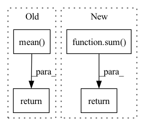

Pattern ID :2793

Before Change
if loss_hard.numel() < n_min:
loss_hard, _ = loss.topk(n_min)
return torch.mean(loss_hard)
class Dice(nn.Module):
def __init__(self, delta: float = 0.5):
After Change
def forward(self, preds, labels: Tensor) -> Tensor:
if isinstance(preds, list):
return sum([w * self._forward(pred, labels) for (pred, w) in zip(preds, self.aux_weights)])
return self._forward(preds, labels)
class Dice(nn.Module):
In pattern: SUPERPATTERN
Frequency: 3
Non-data size: 4
Instances
Fragment ID: 9199311
Project Name: sithu31296/semantic-segmentation
Commit Name: b68900992fb24dd5166b2b34e3d35d19493d747d
Time: 2021-08-21
Author: sithu31296@gmail.com
File Name: utils/losses.py
M Class Name: OhemCrossEntropy
N Class Name: OhemCrossEntropy
M Method Name: forward(3)
N Method Name: forward(3)
M Parent Class: nn.Module
N Parent Class: nn.Module
M File Name: utils/losses.py
N File Name: utils/losses.py
M Start Line: 25
M End Line: 37
N Start Line: 46
N End Line: 49
'>
Before Change
prior1 = torch.distributions.Categorical(logits=torch.zeros_like(l1))
prior2 = torch.distributions.Categorical(logits=torch.zeros_like(l2))
reg = torch.distributions.kl_divergence(posterior1, prior1).mean() + torch.distributions.kl_divergence(posterior2, prior2).mean()
return ssimLoss, contextLoss, reg
class CompressionLossQ(nn.Module):
After Change
reg = torch.distributions.kl_divergence(posterior, prior).mean()
regs.append(reg)
return ssimLoss, contextLoss, sum(regs)
class CompressionLossQ(nn.Module):
def __init__(self):
'>
Fragment ID: 9199312
Project Name: xiaosu-zhu/mcquic
Commit Name: 290ac3b044e8dcee03a63e86c2356c47628be8a6
Time: 2021-09-16
Author: xiaosu.zhu@outlook.com
File Name: src/mcqc/losses/quantization.py
M Class Name: CompressionLossBig
N Class Name: CompressionLossBig
M Method Name: forward(4)
N Method Name: forward(8)
M Parent Class: nn.Module
N Parent Class: nn.Module
M File Name: src/mcqc/losses/quantization.py
N File Name: src/mcqc/losses/quantization.py
M Start Line: 137
M End Line: 164
N Start Line: 140
N End Line: 158
'>
Before Change
// adjust loss to account for number of classes
dice_score = dice_score / targets.shape[1]
return dice_score.mean()
__all__ = ["ce", "ohemce", "dice"]
After Change
def forward(self, preds, targets: Tensor) -> Tensor:
if isinstance(preds, list):
return sum([w * self._forward(pred, targets) for (pred, w) in zip(preds, self.aux_weights)])
return self._forward(preds, targets)
'>
Fragment ID: 9199313
Project Name: sithu31296/semantic-segmentation
Commit Name: b68900992fb24dd5166b2b34e3d35d19493d747d
Time: 2021-08-21
Author: sithu31296@gmail.com
File Name: utils/losses.py
M Class Name: Dice
N Class Name: Dice
M Method Name: forward(3)
N Method Name: forward(3)
M Parent Class: nn.Module
N Parent Class: nn.Module
M File Name: utils/losses.py
N File Name: utils/losses.py
M Start Line: 48
M End Line: 62
N Start Line: 77
N End Line: 80